Register Summary
General Address Space Definitions
MMIO Address Space (RSH_MMIO_ADDRESS_SPACE: 0x0000-0xffffffffff)
The MMIO physical address space for the rshim is described below. This is a general description of the MMIO space as opposed to a register description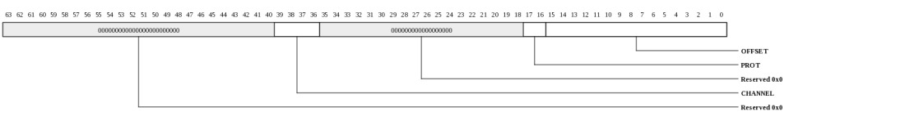
| Bits | Name | Type | Reset | Description
| 39:36 | CHANNEL | RW | 0 | This field of the address selects the channel (device). Channel-0 is the common rshim registers. Channels 1-8 are used to access the rshim-attached devices. |
17:16 | PROT | RW | 0 | Protection level. Setting to 0 or 1 allows access to all registers. Setting to 2 denies access to registers at level 2. Setting to 3 denies access to registers at levels 1 and 2. | 15:0 | OFFSET | RW | 0 | This field of the address provides an offset into the channel whose register space is being accessed. | |
|---|
Register Definitions
Device Info (RSH_DEV_INFO: 0x0000)
This register provides general information about the device attached to this port and channel.
| Bits | Name | Type | Reset | Description
| 35:32 | INSTANCE | RO | HW | Instance ID for multi-instantiated devices. | 27:24 | REGISTER_REV | RO | 0 | Register format architectural revision. | 23:16 | DEVICE_REV | RO | HW | Device revision ID. | 11:0 | TYPE | RO | 021h | Encoded device Type - 33 to indicate rshim |
|
|---|
Device Control (RSH_DEV_CTL: 0x0008)
This register provides general device control.This register is protected at level 2

| Bits | Name | Type | Reset | Description
| 3 | SDN_ROUTE_ORDER | RW | 0 | When 1, packets sent on the SDN will be routed x-first. When 0, packets will be routed y-first. This setting must match the setting in the Tiles. Devices may have additional interfaces with customized route-order settings used in addition to or instead of this field. | 2 | RDN_ROUTE_ORDER | RW | 1 | When 1, packets sent on the RDN will be routed x-first. When 0, packets will be routed y-first. This setting must match the setting in the Tiles. Devices may have additional interfaces with customized route-order settings used in addition to or instead of this field. | |
|---|
MMIO Info (RSH_MMIO_INFO: 0x0010)
This register provides information about how the physical address is interpreted by the IO device. The PA is divided into {CHANNEL,SVC_DOM,IGNORED,REGION,OFFSET}. The values in this register define the size of each of these fields.
| Bits | Name | Type | Reset | Description
| 40:35 | REGION_WIDTH | RO | 0 | Size of the REGION field for this channel. The LSBs of the physical address are interpreted as {REGION,OFFSET} | 34:29 | OFFSET_WIDTH | RO | 16 | Size of the OFFSET field for this channel. The LSBs of the physical address are interpreted as {REGION,OFFSET} | 28:22 | NUM_SVC_DOM | RO | 0 | Number of service domains associated with this channel. | 21:19 | SVC_DOM_WIDTH | RO | 0 | Number of bits of service-domain specifier for this channel. The MSBs of the physical addrress are interpreted as {channel, service-domain} | 18:4 | NUM_CH | RO | 9 | Each configuration channel is mapped to a device having its own config registers. | 3:0 | CH_WIDTH | RO | 4 | Number of bits of channel specifier for all channels. The MSBs of the physical addrress are interpreted as {channel, service-domain} | |
|---|
Memory Info (RSH_MEM_INFO: 0x0018)
This register provides information about memory setup required for this device.
| Bits | Name | Type | Reset | Description
| 55:48 | NUM_TLB_ENT | RO | 0 | Number of IO TLB entries per ASID. | 47:40 | NUM_ASIDS | RO | 0 | Number of ASIDS supported if this device has an IO TLB (otherwise this field is zero). | 35:32 | NUM_HFH_TBL | RO | 1 | Number of hash-for-home tables that must be configured for this channel. | 31:0 | REQ_PORTS | RO | 32768 | Each bit represents a request (QDN) port on the tile fabric. Bit[15] represents the QDN port used for device configuration and is always set for devices implemented on channel-0. Bit[14] is the first port clockwise from the port used to access configuration space. Bit[13] is the second port in the clockwise direction. Bit[16] is the first port counter-clockwise from the port used to access configuration space. When a bit is set, the device has a QDN port at the associated location. For devices using a nonzero channel, this register may return all zeros. | |
|---|
Scratchpad (RSH_SCRATCHPAD: 0x0020)
Scratchpad| Bits | Name | Type | Reset | Description
| 63:0 | SCRATCHPAD | RW | 0 | Scratchpad | |
|---|
Semaphore0 (RSH_SEMAPHORE0: 0x0028)
Semaphore
| Bits | Name | Type | Reset | Description
| 0 | VAL | RW | 0 | When read, the current semaphore value is returned and the semaphore is set to 1. Bit can also be written to 1 or 0. | |
|---|
Semaphore1 (RSH_SEMAPHORE1: 0x0030)
SemaphoreThis register is protected at level 1

| Bits | Name | Type | Reset | Description
| 0 | VAL | RW | 0 | When read, the current semaphore value is returned and the semaphore is set to 1. Bit can also be written to 1 or 0. | |
|---|
Clock Count (RSH_CLOCK_COUNT: 0x0038)
Clock Count
| Bits | Name | Type | Reset | Description
| 15:1 | COUNT | RO | 0 | Indicates the number of core clocks that were counted during 1000 device clock periods. Result is accurate to within +/-1 core clock periods. | 0 | RUN | RW | 0 | When 1, the counter is running. Cleared by HW once count is complete. When written with a 1, the count sequence is restarted. Counter runs automatically after reset. Software must poll until this bit is zero, then read the CLOCK_COUNT register again to get the final COUNT value. | |
|---|
MMIO HFH Table Init Control (RSH_HFH_INIT_CTL: 0x0050)
Initialization control for the hash-for-home tables.This register is protected at level 2

| Bits | Name | Type | Reset | Description
| 6:0 | IDX | RW | 0 | Index into the HFH table. Increments automatically on write or read to HFH_INIT_DAT. | |
|---|
HFH Table Data (RSH_HFH_INIT_DAT: 0x0058)
Read/Write data for hash-for-home tableThis register is protected at level 2
| Bits | Name | Type | Reset | Description
| 22:15 | TILEA | RW | HW | Tile that is selected when the result of the hash_f function is greater than or equal to FRACT | 14:7 | TILEB | RW | HW | Tile that is selected when the result of the hash_f function is less than FRACT | 6:0 | FRACT | RW | HW | Fraction field of HFH table. Determines what portion of the address space maps to TileA vs TileB | |
|---|
Rev ID (RSH_REV_ID: 0x0100)
Tile Revision| Bits | Name | Type | Reset | Description
| 15:8 | CHIP_REV_ID | RO | HW | Chip revision. The low 4 bits indicate the minor revision; the high 4 bits indicate the major revision. |
7:0 | TILE_REV_ID | RO | HW | Provides architectural revision of the tile. |
|
|---|
Fabric Connections (RSH_FABRIC_CONN: 0x0108)
Indicates devices connected at the edges of the Tile fabric. A set bit indicates that an IO device will respond to MMIO accesses at the associated location.| Bits | Name | Type | Reset | Description
| 63:48 | WEST | RO | HW | Bit[0] represents the device located to the West of Tile(0,0). Bit[1] represents the device located to the West of Tile(0,1). etc. | 47:32 | SOUTH | RO | HW | Bit[0] represents the device located to the South of Tile(0,x). Bit[1] represents the device located to the South of Tile(1,x). etc. | 31:16 | EAST | RO | HW | Bit[0] represents the device located to the East of Tile(x,0). Bit[1] represents the device located to the East of Tile(x,1). etc. | 15:0 | NORTH | RO | HW | Bit[0] represents the device located to the North of Tile(0,0). Bit[1] represents the device located to the North of Tile(1,0). etc. | |
|---|
Fabric Dimensions (RSH_FABRIC_DIM: 0x0110)
Indicates the size of the Tile Fabric and the location of the rshim.| Bits | Name | Type | Reset | Description
| 15:8 | RSHIM_LOC | RO | HW | Indicates the location of rshim on the mesh. If this register returns 0x00, the rshim location is 1,-1 (or 0x1f as an encoded mesh coordinate). | 7:4 | DIM_X | RO | HW | Indicates the number of Tiles in the X dimension. | 3:0 | DIM_Y | RO | HW | Indicates the number of Tiles in the Y dimension. | |
|---|
IPI Location (RSH_IPI_LOC: 0x0118)
Indicates the location(s) of IPI controllers in the fabric. When set to 0xff, there is no associated IPI controller.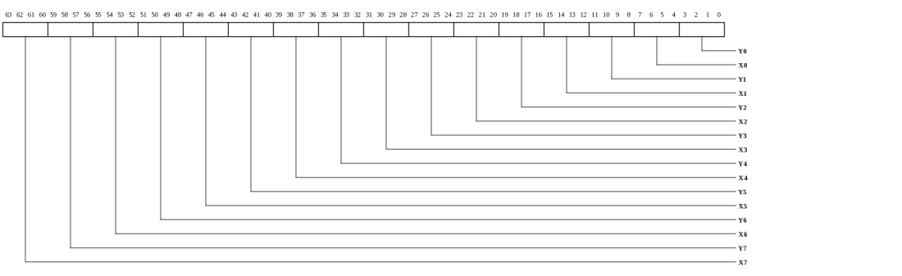
| Bits | Name | Type | Reset | Description
| 63:60 | X7 | RO | HW | X-Location of IPI Controller 7. | 59:56 | Y7 | RO | HW | Y-Location of IPI Controller 7. | 55:52 | X6 | RO | HW | X-Location of IPI Controller 6. | 51:48 | Y6 | RO | HW | Y-Location of IPI Controller 6. | 47:44 | X5 | RO | HW | X-Location of IPI Controller 5. | 43:40 | Y5 | RO | HW | Y-Location of IPI Controller 5. | 39:36 | X4 | RO | HW | X-Location of IPI Controller 4. | 35:32 | Y4 | RO | HW | Y-Location of IPI Controller 4. | 31:28 | X3 | RO | HW | X-Location of IPI Controller 3. | 27:24 | Y3 | RO | HW | Y-Location of IPI Controller 3. | 23:20 | X2 | RO | HW | X-Location of IPI Controller 2. | 19:16 | Y2 | RO | HW | Y-Location of IPI Controller 2. | 15:12 | X1 | RO | HW | X-Location of IPI Controller 1. | 11:8 | Y1 | RO | HW | Y-Location of IPI Controller 1. | 7:4 | X0 | RO | HW | X-Location of IPI Controller 0. | 3:0 | Y0 | RO | HW | Y-Location of IPI Controller 0. | |
|---|
Error Status (RSH_ERROR_STATUS: 0x0208)
Indicators for various fatal and non-fatal RSH error conditions
| Bits | Name | Type | Reset | Description
| 0 | MMIO_ILL_OPC | RO | 0 | Illegal opcode received on MMIO interface | |
|---|
MMIO Error Information (RSH_MMIO_ERROR_INFO: 0x0210)
Provides diagnostics information when an MMIO error occurs. Captured whenever the MMIO_ERR interrupt condition occurs (typically due to size error).
| Bits | Name | Type | Reset | Description
| 58:54 | OPC | RO | 0 | Opcode of request. MMIO supports only MMIO_READ (0x0e) and MMIO_WRITE (0x0f). All others are reserved and will only occur on a misconfigured TLB. | 53:12 | PA | RO | 0 | Full PA from request. | 11:8 | SIZE | RO | 0 | Request size. 0=1B, 1=2B, 2=4B, 3=8B, 4=16B, 5=32B, 6=48B, 7=64B. | 7:0 | SRC | RO | 0 | Source Tile in {x[3:0],y[3:0]} format. | |
|---|
Bindings for interrupt vectors (RSH_INT_BIND: 0x0300)
This register provides read/write access to all of the interrupt bindings for the rshim. The VEC_SEL field is used to select the vector being configured and the BIND_SEL selects the interrupt within the vector. To read a binding, first write the VEC_SEL and BIND_SEL fields along with a 1 in the NW field. Then read back the register.This register is protected at level 2
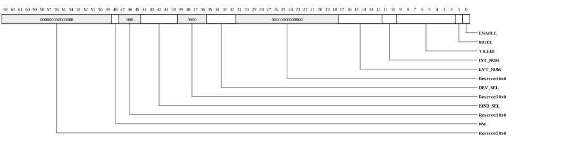
| Bits | Name | Type | Reset | Description
| 48 | NW | WO | 0 | When written with a 1, the interrupt binding data will not be modified. Set this when writing the DEV_SEL and BIND_SEL fields in preparation for a read. | 44:40 | BIND_SEL | RW | HW | Selects binding within the device selected by VEC_SEL. For devices with only one binding, this field must be zero. |
35:32 | DEV_SEL | RW | HW | Selects device whose bindings are to be accessed. Some devices may support a system interrupt binding in addition to the normal device binding. This is typically used for hypervisor services such as TLB misses. For devices that support a system binding, the BIND_SEL field selects between device (BIND_SEL=0) and system (BIND_SEL=1) bindings. |
17:12 | EVT_NUM | RW | HW | Event number to be delivered to Tile | 11:10 | INT_NUM | RW | HW | Interrupt number to be delivered to Tile | 9:2 | TILEID | RW | HW | Tile targeted for this interrupt in {x[3:0],y[3:0]} format. | 1 | MODE | RW | 0 | When 1, interrupt will be dispatched each time it occurs. When 0, the interrupt is only sent if the status bit is clear. | 0 | ENABLE | RW | 0 | Enable the interrupt. When 0, the interrupt won't be dispatched, however the STATUS bit will continue to be updated. | |
|---|
Interrupt vector-0, write-one-to-clear (RSH_INT_VEC0_W1TC: 0x0308)
Interrupt status vector with write-one-to-clear functionality. Provides access to the same status bits that are visible in INT_VEC0_RTC. Writing a 1 clears the status bit.This vector contains the following interrupts:
0: SWINT0
1: SWINT1
2: SWINT2
3: SWINT3
4: DEV_PROT
5: MMIO_ERR
6: DCNT0
7: DCNT1
8: DCNT2
9: TM_HTT_LWM
10: TM_HTT_HWM
11: TM_TTH_LWM
12: TM_TTH_HWM
13: TM_HTT_RERR
14: TM_HTT_WERR
15: TM_TTH_RERR
16: TM_TTH_WERR
17: DIAG_BCST0
18: DIAG_BCST1
19: DIAG_BCST2
20: DIAG_BCST3
21: CFG_PROT_VIOL
22: PWR_ALARM
23: PWR_HIGH
24: CLK_LIMIT_FAIL
This register is protected at level 1

| Bits | Name | Type | Reset | Description
| 21 | CFG_PROT_VIOL | RW | 0 | A config access attempted to exceed its allowed protection level. | 20 | DIAG_BCST3 | RW | 0 | Diag Broadcast-3 Asserted | 19 | DIAG_BCST2 | RW | 0 | Diag Broadcast-2 Asserted | 18 | DIAG_BCST1 | RW | 0 | Diag Broadcast-1 Asserted | 17 | DIAG_BCST0 | RW | 0 | Diag Broadcast-0 Asserted | 16 | TM_TTH_WERR | RW | 0 | TileMonitor TileToHost Write-Full Error | 15 | TM_TTH_RERR | RW | 0 | TileMonitor TileToHost Read-Empty Error | 14 | TM_HTT_WERR | RW | 0 | TileMonitor HostToTile Write-Full Error | 13 | TM_HTT_RERR | RW | 0 | TileMonitor HostToTile Read-Empty Error | 12 | TM_TTH_HWM | RW | 0 | TileMonitor TileToHost High Water Mark | 11 | TM_TTH_LWM | RW | 0 | TileMonitor TileToHost Low Water Mark | 10 | TM_HTT_HWM | RW | 0 | TileMonitor HostToTile High Water Mark | 9 | TM_HTT_LWM | RW | 0 | TileMonitor HostToTile Low Water Mark | 8 | DCNT2 | RW | 0 | Down Counter 2 | 7 | DCNT1 | RW | 0 | Down Counter 1 | 6 | DCNT0 | RW | 0 | Down Counter 0 | 5 | MMIO_ERR | RW | 0 | An MMIO request encountered an error. Error info captured in MMIO_ERROR_INFO | 4 | DEV_PROT | RW | 0 | Device Protection Error. Device or remote command interface attempted access but associated protection bit was set in DEVICE_PROTECTION. | 3 | SWINT3 | RW | 0 | Software Interrupt | 2 | SWINT2 | RW | 0 | Software Interrupt | 1 | SWINT1 | RW | 0 | Software Interrupt | 0 | SWINT0 | RW | 0 | Software Interrupt | |
|---|
Interrupt vector-0, read-to-clear (RSH_INT_VEC0_RTC: 0x0310)
Interrupt status vector with read-to-clear functionality. Provides access to the same status bits that are visible in INT_VEC0_W1TC. Reading this register clears all of the associated interrupts.This vector contains the following interrupts:
0: SWINT0
1: SWINT1
2: SWINT2
3: SWINT3
4: DEV_PROT
5: MMIO_ERR
6: DCNT0
7: DCNT1
8: DCNT2
9: TM_HTT_LWM
10: TM_HTT_HWM
11: TM_TTH_LWM
12: TM_TTH_HWM
13: TM_HTT_RERR
14: TM_HTT_WERR
15: TM_TTH_RERR
16: TM_TTH_WERR
17: DIAG_BCST0
18: DIAG_BCST1
19: DIAG_BCST2
20: DIAG_BCST3
21: CFG_PROT_VIOL
22: PWR_ALARM
23: PWR_HIGH
24: CLK_LIMIT_FAIL
This register is protected at level 1
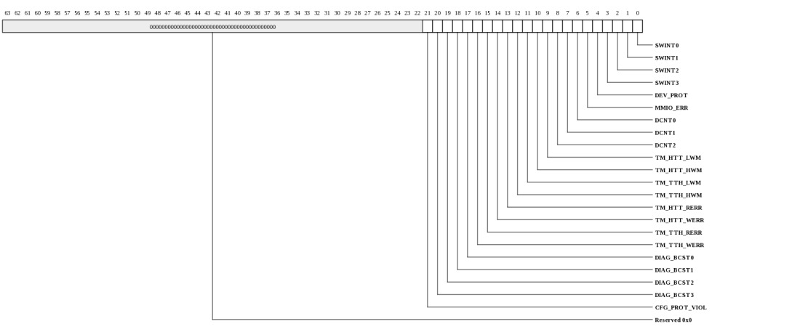
| Bits | Name | Type | Reset | Description
| 21 | CFG_PROT_VIOL | RO | 0 | A config access attempted to exceed its allowed protection level. | 20 | DIAG_BCST3 | RO | 0 | Diag Broadcast-3 Asserted | 19 | DIAG_BCST2 | RO | 0 | Diag Broadcast-2 Asserted | 18 | DIAG_BCST1 | RO | 0 | Diag Broadcast-1 Asserted | 17 | DIAG_BCST0 | RO | 0 | Diag Broadcast-0 Asserted | 16 | TM_TTH_WERR | RO | 0 | TileMonitor TileToHost Write-Full Error | 15 | TM_TTH_RERR | RO | 0 | TileMonitor TileToHost Read-Empty Error | 14 | TM_HTT_WERR | RO | 0 | TileMonitor HostToTile Write-Full Error | 13 | TM_HTT_RERR | RO | 0 | TileMonitor HostToTile Read-Empty Error | 12 | TM_TTH_HWM | RO | 0 | TileMonitor TileToHost High Water Mark | 11 | TM_TTH_LWM | RO | 0 | TileMonitor TileToHost Low Water Mark | 10 | TM_HTT_HWM | RO | 0 | TileMonitor HostToTile High Water Mark | 9 | TM_HTT_LWM | RO | 0 | TileMonitor HostToTile Low Water Mark | 8 | DCNT2 | RO | 0 | Down Counter 2 | 7 | DCNT1 | RO | 0 | Down Counter 1 | 6 | DCNT0 | RO | 0 | Down Counter 0 | 5 | MMIO_ERR | RO | 0 | An MMIO request encountered an error. Error info captured in MMIO_ERROR_INFO | 4 | DEV_PROT | RO | 0 | Device Protection Error. Device or remote command interface attempted access but associated protection bit was set in DEVICE_PROTECTION. | 3 | SWINT3 | RO | 0 | Software Interrupt | 2 | SWINT2 | RO | 0 | Software Interrupt | 1 | SWINT1 | RO | 0 | Software Interrupt | 0 | SWINT0 | RO | 0 | Software Interrupt | |
|---|
Software Interrupt (RSH_SWINT: 0x0318)
Used to trigger interrupts via register write. Each bit corresponds to a single SWINT interrupt which will be triggered when written with a 1.| Bits | Name | Type | Reset | Description
| 3:0 | SWINT | WO | 0 | Used to trigger interrupts via register write. Each bit corresponds to a single SWINT interrupt which will be triggered when written with a 1. | |
|---|
Packet Generator Control (RSH_PG_CTL: 0x0400)
Configuration of the packet generator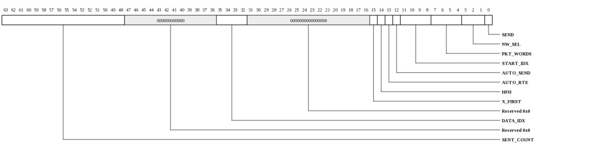
| Bits | Name | Type | Reset | Description
| 63:48 | SENT_COUNT | RW | 0 | Count of number of words successfully sent from the packet generator. This is typically used by external devices to flow control the boot stream and prevent blocking between boot writes and debug accesses. In FIFO_MODE, this represents the number of words that have been read (dequeued) from the FIFO. | 35:32 | DATA_IDX | RW | 1 | Data word to be read/written. The maximum allowed value is 10. Increments automatically on each access to PG_DATA. When incremented to PKT_WORDS, DATA_IDX wraps back to START_IDX. | Note that R/SDN packets each use two data words per packet flit. 16 bits from the upper word are unused on RDN packets. 15 | X_FIRST | RW | 1 | When 1, packets use X_FIRST route order. Only applies when AUTO_RTE is 1. | 14 | HFH | RW | 0 | When 1, packets sent on the SDN will calculate the home tile based on the address field in the packet using the hash-for-home table. In HFH mode, the MASK field for the lookup comes from bits[3:0] of the first data word. The OFFSET comes from bits[7:4] of the first data word. HFH will only be applied on SDN packets and only when AUTO_RTE is also 1. | 13 | AUTO_RTE | RW | 1 | When 1, the packet's route header will be auto-generated based on the low 8 bits of data word 0. The bits are interpreted as {TILE_X[3:0],TILE_Y[3:0]}. When 0, the first data word contains the actual route header. | 12 | AUTO_SEND | RW | 1 | When 1, the packet will automatically send when the data register is written and DATA_IDX is (PKT_WORDS-1). When AUTO_SEND is 1, the 32kB boot FIFO will be used to stream data into the packet generator. The AUTO_SEND bit must not be changed unless the SEND bit is clear indicating all previous transactions have completed. | 11:8 | START_IDX | RW | 1 | When the DATA_IDX reaches PKT_WORDS in AUTO_SEND mode, the DATA_IDX will be reset to START_IDX. This allows the first START_IDX flits to remain intact for each packet. START_IDX must be even for S/RDN packets. | 7:4 | PKT_WORDS | RW | 2 | Number of 64-bit words to be sent including the route header. The maximum legal value is 10. For the S/RDN, two words will be consumed for each flit that is sent. Hence for R/SDN, this value MUST be even. For U/IDN, the first DATA word is treated as the header flit and each subsequent data word will result in two 32-bit flits on the network. So setting this register to 3 will result in the 1st word from the data buffer being sent as the route header and the subsequent two words will result in 4 additional flits on the U/IDN. | 3:1 | NW_SEL | RW | 4 | Selects target network for packet |
0 | SEND | RW | 0 | When written with a 1, the packet in the PG_DATA buffer will be sent. This bit will read as 1 if there is a send in progress or if there is data in the boot FIFO. Sending a packet while a send is in progress has unpredictable results. | |
|---|
Packet Generator Data (RSH_PG_DATA: 0x0408)
10 Data words for packet generator. The data word to be read or written is indexed by PG_CTL.DATA_IDX. The DATA_IDX is incremented automatically on each access. Note that R/SDN packets each use two data words per packet flit. If either the PG_CTL.AUTO_SEND or the PG_CTL.FIFO_MODE is 1, writes to PG_DATA go into the boot FIFO. Similarly, if the PG_CTL.FIFO_MODE is 1, reads to PG_DATA pop one word from the FIFO. In this case, if the FIFO is empty, the read will return all 1's and the FIFO state will not be affected.| Bits | Name | Type | Reset | Description
| 63:0 | PG_DATA | RW | 0 | 10 Data words for packet generator. The data word to be read or written is indexed by PG_CTL.DATA_IDX. The DATA_IDX is incremented automatically on each access. Note that R/SDN packets each use two data words per packet flit. If either the PG_CTL.AUTO_SEND or the PG_CTL.FIFO_MODE is 1, writes to PG_DATA go into the boot FIFO. Similarly, if the PG_CTL.FIFO_MODE is 1, reads to PG_DATA pop one word from the FIFO. In this case, if the FIFO is empty, the read will return all 1's and the FIFO state will not be affected. | |
|---|
Packet Generator Completion Data (RSH_PG_COMP_DATA: 0x0410-0x0457)
Any data received on the RDN will be placed into this data buffer. The first COMP_DATA register contains the RDN header (but no data bytes). The remaining 8 data registers contain any data from the RDN packet.Any data received on the RDN will be placed into this data buffer. The first COMP_DATA register contains the RDN header.
| Bits | Name | Type | Reset | Description
| 63:0 | DATA | RO | 0 | Completion data word. | |
|---|
Packet Generator Completion Status (RSH_PG_COMP_STS: 0x0480)
This register contains status information for completions that have been captured from the RDN.| Bits | Name | Type | Reset | Description
| 18:16 | SIZE | RO | 0 | Number of flits received in the last completion packet on the RDN. | 15:0 | COUNT | RW | 0 | Number of completion packets received. This counter saturates at 65535 but may be cleared by software. | |
|---|
Byte Access Control (RSH_BYTE_ACC_CTL: 0x0490)
Provides 8-byte access to rshim registers using 1B, 2B, or 4B accesses.| Bits | Name | Type | Reset | Description
| 6 | READ_TRIG | WO | 0 | When written with a 1, a read to BYTE_ACC_ADDR is triggered and the resulting data is placed into BYTE_ACC_RDAT. | 5 | PENDING | RO | 0 | When asserted, an access is still pending. Attempting to access the WDAT/RDAT/ADDR registers when an access is pending has unpredictable results. | 4:3 | SIZE | RW | 0 | Size of access. This controls how much the BYTE_PTR increments by on each BYTE_ACC_WDAT/RDAT access. |
2:0 | BYTE_PTR | RW | 0 | Byte-index into the 8-byte wdat/rdat/addr register for access. Increments automatically on access to the BYTE_ACC_WDAT, BYTE_ACC_RDAT, or BYTE_ACC_ADDR registers. | |
|---|
Byte Access Write Data (RSH_BYTE_ACC_WDAT: 0x0498)
8 bytes of write data written when BYTE_ACC_CTL.BYTE_PTR wraps back to zero.
| Bits | Name | Type | Reset | Description
| 63:0 | DAT | RW | 0 | The 8-bytes in this register are updated based on BYTE_ACC_CTL.BYTE_PTR and SIZE. Each time this register is written, the BYTE_ACC_CTL.BYTE_PTR is incremented based on BYTE_ACC_CTL.SIZE. When the most significant byte of this register is written, the register at address BYTE_ACC_ADDR is written using the data in this register. | |
|---|
Byte Access Read Data (RSH_BYTE_ACC_RDAT: 0x04a0)
8 bytes of read data captured when READ_TRIGGER is written with a 1.
| Bits | Name | Type | Reset | Description
| 63:0 | DAT | RO | 0 | Each time this register is read, the BYTE_ACC_CTL.BYTE_PTR is incremented based on BYTE_ACC_CTL.SIZE. The bytes returned will be shifted into the least significant BYTE_ACC_CTL.SIZE bytes based on the current value of BYTE_ACC_CTL.BYTE_PTR. | |
|---|
Byte Access Register Address (RSH_BYTE_ACC_ADDR: 0x04a8)
Register address used for read/write accesses triggered by BYTE_ACC_WDAT/RDAT. The BYTE_ACC_CTL.BYTE_PTR is used and auto incremented when writing or reading this register.| Bits | Name | Type | Reset | Description
| 19:16 | CHANNEL | RW | 0 | This field of the address selects the channel (device). Channel-0 is the common rshim registers. Channels 1-8 are used to access the rshim-attached devices. | 15:3 | REGNUM | RW | 0 | This field selects the 8-byte register to be accessed within the channel specified by CHANNEL. | |
|---|
Clock Control (RSH_CLOCK_CONTROL: 0x04f8)
NOTE: This register only exists in the following devices: Gx9 Gx16 Gx36 Gx72.Provides control over the core PLL
This register is protected at level 2

| Bits | Name | Type | Reset | Description
| 31 | CLOCK_READY | RO | 0 | Indicates that PLL has been enabled and clock is now running off of the PLL output. | 20:13 | PLL_M | RW | 0 | Feedback divider value. The resulting clock frequency is calculated as ((REF / (PLL_N+1)) * 2 * (PLL_M + 1)) / (2^Q). The VCO frequency is (REF / (PLL_N+1)) * 2 * (PLL_M + 1)) and must be in the range of 2133 MHz to 4266 MHz. | For example, to create a 1 GHz clock from a 125 MHz refclk, Q would be set to 2 so that the VCO would be 1 GHz*2^2 = 4000 MHz. 2*(PLL_M+1)/(PLL_N+1) = 32. PLL_N=0 and PLL_M=15 would keep the post divide frequency within the legal range since 125/(0+1) is 125. PLL_RANGE would be set to R104_166. 12:7 | PLL_N | RW | 0 | Reference divider value. Input refclk is divided by (PLL_N+1). The post-divided clock must be in the range of 14 MHz to 200 MHz. The low 5 bits of this field are used. The MSB is reserved. The minimum value of PLL_N that keeps the post-divided clock within the legal range will provide the best jitter performance. | 6:4 | PLL_Q | RW | 0 | Output divider. The VCO clock is divided by 2^PLL_Q to create the final output clock. This should be set such that 2133 MHz<(output_frequency * 2^PLL_Q)<4266 MHz. The maximum supported value of PLL_Q is 6 (divide by 64). | 3:1 | PLL_RANGE | RW | 0 | This value should be set based on the post divider frequency, REF/(PLL_N+1). |
0 | ENA | RW | 0 | When written with a 1, the PLL will be configured with the settings in PLL_RANGE/Q/N/M. When written with a zero, the PLL will be bypassed. | |
|---|
Reset Control (RSH_RESET_CONTROL: 0x0500)
Reset ControlThis register is protected at level 2
| Bits | Name | Type | Reset | Description
| 31:0 | RESET_CHIP | WO | 0 | When written with the KEY, the chip will be soft reset. On soft reset, the BREADCRUMB registers will be left intact allowing reboot software to determine why the chip was reset. Using a KEY reduces the likelihood that a misconfigured boot ROM or other errant write could accidentally reset the chip. |
|
|---|
Reset MASK (RSH_RESET_MASK: 0x0508)
Each bit corresponds to a device or function within a device. The bit assignments match the IO_RESET register. Any devices or functions corresponding to bits that are set will NOT be reset when RESET_CONTROL is used to issue a software reset. Software must insure that any associated devices have been properly quiesced prior to issuing a RESET_CHIP with any RESET_MASK bits set. This register is reset by hard_rst_l but not software reset.This register is protected at level 2
| Bits | Name | Type | Reset | Description
| 63:0 | RESET_MASK | RW | 0 | Each bit corresponds to a device or function within a device. The bit assignments match the IO_RESET register. Any devices or functions corresponding to bits that are set will NOT be reset when RESET_CONTROL is used to issue a software reset. Software must insure that any associated devices have been properly quiesced prior to issuing a RESET_CHIP with any RESET_MASK bits set. This register is reset by hard_rst_l but not software reset. | |
|---|
Breadcrumb0 (RSH_BREADCRUMB0: 0x0510)
Scratchpad register that resets only on hard_rst_l (power on reset). Typically used by software to leave information for the reboot software on software reset.| Bits | Name | Type | Reset | Description
| 63:0 | BREADCRUMB0 | RW | 0 | Scratchpad register that resets only on hard_rst_l (power on reset). Typically used by software to leave information for the reboot software on software reset. | |
|---|
Breadcrumb1 (RSH_BREADCRUMB1: 0x0518)
Scratchpad register that resets only on hard_rst_l (power on reset). Typically used by software to leave information for the reboot software on software reset.| Bits | Name | Type | Reset | Description
| 63:0 | BREADCRUMB1 | RW | 0 | Scratchpad register that resets only on hard_rst_l (power on reset). Typically used by software to leave information for the reboot software on software reset. | |
|---|
IO Reset (RSH_IO_RESET: 0x0520)
Each bit corresponds to a device or function within a device. When written with a 1, the associated device or function will be reset. Software is responsible for any quiesce procedures required for the associated device prior to reset.This register is protected at level 2

| Bits | Name | Type | Reset | Description
| 63:0 | VAL | WO | 0 | Bits in this vector are chip specific (see the definitions for GX**_IO_RESET). | |
|---|
IO Reset (RSH_GX36_IO_RESET: 0x0520)
NOTE: This register only exists in the following devices: Gx36.Each bit corresponds to a device or function within a device. When written with a 1, the associated device or function will be reset. Software is responsible for any quiesce procedures required for the associated device prior to reset.
This register is protected at level 2
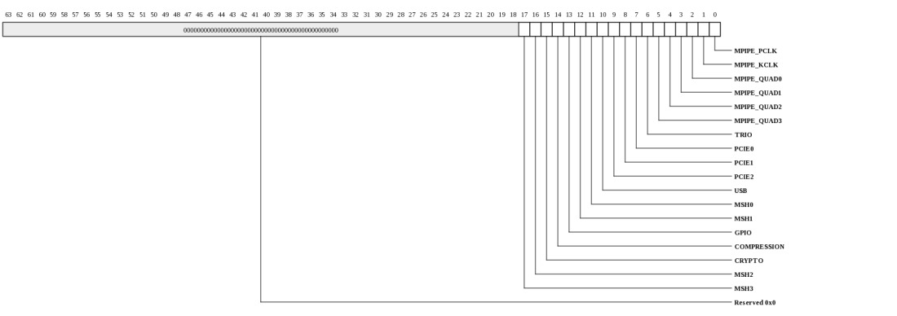
| Bits | Name | Type | Reset | Description
| 17 | MSH3 | WO | 0 | | 16 | MSH2 | WO | 0 | | 15 | CRYPTO | WO | 0 | | 14 | COMPRESSION | WO | 0 | | 13 | GPIO | WO | 0 | | 12 | MSH1 | WO | 0 | | 11 | MSH0 | WO | 0 | | 10 | USB | WO | 0 | | 9 | PCIE2 | WO | 0 | | 8 | PCIE1 | WO | 0 | | 7 | PCIE0 | WO | 0 | | 6 | TRIO | WO | 0 | | 5 | MPIPE_QUAD3 | WO | 0 | | 4 | MPIPE_QUAD2 | WO | 0 | | 3 | MPIPE_QUAD1 | WO | 0 | | 2 | MPIPE_QUAD0 | WO | 0 | | 1 | MPIPE_KCLK | WO | 0 | | 0 | MPIPE_PCLK | WO | 0 | | |
|---|
IO Reset (RSH_GX72_IO_RESET: 0x0520)
NOTE: This register only exists in the following devices: Gx72.Each bit corresponds to a device or function within a device. When written with a 1, the associated device or function will be reset. Software is responsible for any quiesce procedures required for the associated device prior to reset.
This register is protected at level 2
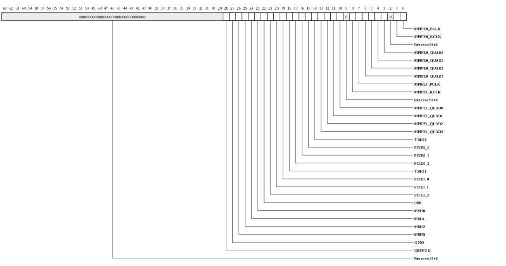
| Bits | Name | Type | Reset | Description
| 28 | CRYPTO | WO | 0 | | 27 | GPIO | WO | 0 | | 26 | MSH3 | WO | 0 | | 25 | MSH2 | WO | 0 | | 24 | MSH1 | WO | 0 | | 23 | MSH0 | WO | 0 | | 22 | USB | WO | 0 | | 21 | PCIE1_2 | WO | 0 | | 20 | PCIE1_1 | WO | 0 | | 19 | PCIE1_0 | WO | 0 | | 18 | TRIO1 | WO | 0 | | 17 | PCIE0_2 | WO | 0 | | 16 | PCIE0_1 | WO | 0 | | 15 | PCIE0_0 | WO | 0 | | 14 | TRIO0 | WO | 0 | | 13 | MPIPE1_QUAD3 | WO | 0 | | 12 | MPIPE1_QUAD2 | WO | 0 | | 11 | MPIPE1_QUAD1 | WO | 0 | | 10 | MPIPE1_QUAD0 | WO | 0 | | 8 | MPIPE1_KCLK | WO | 0 | | 7 | MPIPE1_PCLK | WO | 0 | | 6 | MPIPE0_QUAD3 | WO | 0 | | 5 | MPIPE0_QUAD2 | WO | 0 | | 4 | MPIPE0_QUAD1 | WO | 0 | | 3 | MPIPE0_QUAD0 | WO | 0 | | 1 | MPIPE0_KCLK | WO | 0 | | 0 | MPIPE0_PCLK | WO | 0 | | |
|---|
Boot Control (RSH_BOOT_CONTROL: 0x0528)
Boot ControlThis register is protected at level 2
| Bits | Name | Type | Reset | Description
| 2:0 | BOOT_MODE | RW | 0 | Indicates source for ROM boot on next software reset. Initialized based on strapping pins on hard_rst_l. This register is not reset on software reset. |
|
|---|
Watchdog Control (RSH_WATCHDOG_CONTROL: 0x0530)
Watchdog ControlThis register is protected at level 2
| Bits | Name | Type | Reset | Description
| 2:0 | RESET_ENA | RW | 0 | Each bit corresponds to one of the 3 down counters. When asserted, if the associated down counter triggers an interrupt condition, the RESET_CHIP functionality will be triggered automatically (the interrupt binding doesn't have to be enabled). | |
|---|
Device Protection (RSH_DEVICE_PROTECTION: 0x0538)
Controls device access to rshim services. When a bit is one, the associated device will be disabled. Reads and writes from the device will acknowledged but ignored.This register is protected at level 2
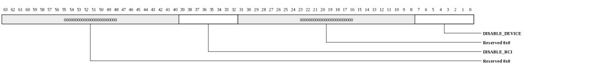
| Bits | Name | Type | Reset | Description
| 39:32 | DISABLE_RCI | RW | 0 | Each bit corresponds to a remote command interface. Multiple bits may be set. The interface mapping is: | 0 : JTAG. 1 : TRIO0. 2 : USB. 3 : TRIO1. 4 : TRIO2. 5 : RSVD5. 6 : RSVD6. 7 : RSVD7. 7:0 | DISABLE_DEVICE | RW | 0 | Each bit corresponds to a device. The device mapping is: | 0 : UART0. 1 : UART1. 2 : I2CM0. 3 : I2CM1. 4 : I2CM2. 5 : I2CS. 6 : SPI. 7 : MMC. |
|---|
VID Core (RSH_VID_CORE: 0x0540)
This register provides the the value driven out on VDD_CORE pins, which drive VID[5:0] of the core voltage regulator. Note that the VR11 VID code is 8-bits; VID[7:6] should be tied to 01 on the PC board. Note that these pins may not exist on all devices or be used on all boards.This register is protected at level 2
| Bits | Name | Type | Reset | Description
| 5:0 | VID | RW | 2ah | Value for VID[5:0] of the core voltage regulator. The reset value corresponds to 0.9500 V. | |
|---|
VID for DDR DRAMs (RSH_VID_DDR: 0x0548)
This register provides the value driven out on VDD_DDR pins, which drive VID[6:3] of the DRAM voltage regulator. Note that the VR11 VID code is 8-bits; VID[7] should be tied to 0 and VID[2:0] tied to 010, respectively, on the PC board. Note that these pins may not exist on all devices or be used on all boards.This register is protected at level 2
| Bits | Name | Type | Reset | Description
| 6:3 | VID | RW | 8 | Value for VID[6:3] of the DRAM voltage regulator. The reset value corresponds to 1.2000 V. | |
|---|
Scratch buffer control (RSH_SCRATCH_BUF_CTL: 0x0600)
Controls R/W access to scratch buffer.| Bits | Name | Type | Reset | Description
| 6:0 | IDX | RW | 0 | Index into the 128 word scratch buffer. Increments automatically on write or read to SCRATCH_BUF_DAT. | |
|---|
Scratch buffer data (RSH_SCRATCH_BUF_DAT: 0x0610)
Read/Write data for scratch buffer| Bits | Name | Type | Reset | Description
| 63:0 | SCRATCH_BUF_DAT | RW | HW | Read/Write data for scratch buffer | |
|---|
Pseudo-Rand (RSH_PSEUDO_RAND: 0x0620)
Provides a pseudo-random 64-bit value in the range of [1..(2**64)-1] using a 64-bit LFSR (taps are 64,63,61,60).| Bits | Name | Type | Reset | Description
| 63:0 | PSEUDO_RAND | RW | 0 | Provides a pseudo-random 64-bit value in the range of [1..(2**64)-1] using a 64-bit LFSR (taps are 64,63,61,60). | |
|---|
Pseudo-Rand Control (RSH_PSEUDO_RAND_CONTROL: 0x0628)
Pseudo-Rand Control| Bits | Name | Type | Reset | Description
| 0 | P_RAND_MODE | RW | 0 | When 1, the RSHIM_P_RAND value advances once each time it is read. When 0, it is free running. | |
|---|
Uptime (RSH_UPTIME: 0x0630)
Provides core_refclk cycle count since last reset (either hard or soft).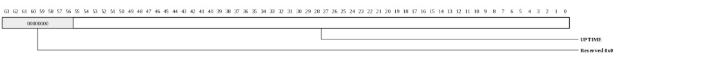
| Bits | Name | Type | Reset | Description
| 55:0 | UPTIME | RW | 0 | Provides core_refclk cycle count since last reset (either hard or soft). | |
|---|
Uptime (RSH_UPTIME_POR: 0x0638)
Provides core_refclk cycle count since last hard_reset. This register is not reset on a software reset.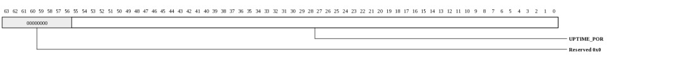
| Bits | Name | Type | Reset | Description
| 55:0 | UPTIME_POR | RW | 0 | Provides core_refclk cycle count since last hard_reset. This register is not reset on a software reset. | |
|---|
Down Count Current Value (RSH_DOWN_COUNT_VALUE: 0x0700-0x0737 stride: 24)
Down Count Current Value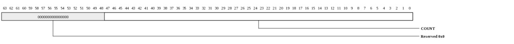
| Bits | Name | Type | Reset | Description
| 47:0 | COUNT | RW | 0 | Current value for the down counter. Writable by SW. Decremented by HW based on setup in control register. When counter is 0 and timer tick occurs, an interrupt is signaled. | |
|---|
Down Count Refresh Value (RSH_DOWN_COUNT_REFRESH_VALUE: 0x0708-0x073f stride: 24)
Down Count Refresh Value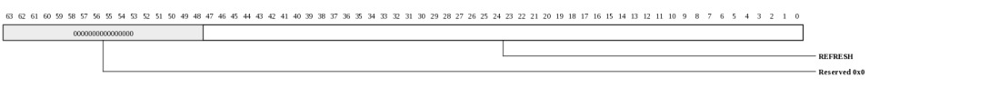
| Bits | Name | Type | Reset | Description
| 47:0 | REFRESH | RW | 0 | When COUNT reaches 0, this value is loaded at the next time interval (defined in the control register). | |
|---|
Down Count Control (RSH_DOWN_COUNT_CONTROL: 0x0710-0x0747 stride: 24)
Down Count Control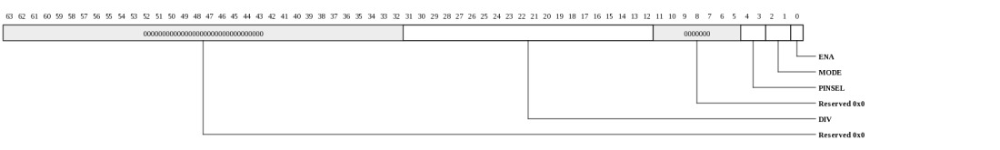
| Bits | Name | Type | Reset | Description
| 31:12 | DIV | RW | 0 | Clock divisor. Number of additional ticks of clock source to trigger a down count. Setting to 0 causes the down counter to decrement every cycle. Setting to 1 causes the down counter to decrement every other cycle. To convert a 10 MHz source to a 100 KHz down count, for example, the value would be set to 99(d). | 4:3 | PINSEL | RW | 0 | Pin select for external clocking. Can source 1 of 3 pins. This setting only matters if MODE is nonzero. The minimum pulse width supported on these pins is 10 ns (50 MHz with a 50% duty cycle). |
2:1 | MODE | RW | 0 | Clock mode for the down counter. |
0 | ENA | RW | 0 | When 0, the current value is frozen and no interrupts will be signaled. | |
|---|
EFUSE Control (RSH_EFUSE_CTL: 0x0800)
NOTE: This register only exists in the following devices: Gx9 Gx16 Gx36 Gx72.Provides access to the on-chip eFuse structure
| Bits | Name | Type | Reset | Description
| 8 | READ_PEND | RO | 0 | When 1, the fuse read is still pending and the data in EFUSE_DATA is not valid. Software must poll this bit until clear whenever EFUSE_CTL.INDEX is changed. | 4:0 | INDEX | RW | 0 | 8-byte address into the fuse array. | |
|---|
EFUSE Control Data word0 (RSH_EFUSE_CTL_DATA_0: 0x0808)
EFUSE_DATA contents when EFUSE_CTL.INDEX is set to the first efuse control (after IO_DISABLE words).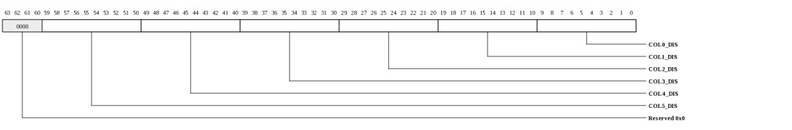
| Bits | Name | Type | Reset | Description
| 59:50 | COL5_DIS | RO | 0 | Contents of the Tile-Disable fuses for column-5. | 49:40 | COL4_DIS | RO | 0 | Contents of the Tile-Disable fuses for column-4. | 39:30 | COL3_DIS | RO | 0 | Contents of the Tile-Disable fuses for column-3. | 29:20 | COL2_DIS | RO | 0 | Contents of the Tile-Disable fuses for column-2. | 19:10 | COL1_DIS | RO | 0 | Contents of the Tile-Disable fuses for column-1. | 9:0 | COL0_DIS | RO | 0 | Contents of the Tile-Disable fuses for column-0. | |
|---|
EFUSE Control Data word1 (RSH_EFUSE_CTL_DATA_1: 0x0808)
EFUSE_DATA contents when EFUSE_CTL.INDEX is set to the second efuse control (after IO_DISABLE words).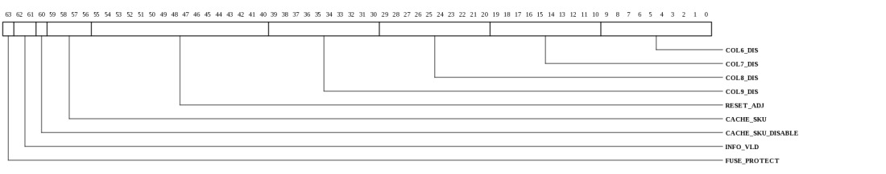
| Bits | Name | Type | Reset | Description
| 63 | FUSE_PROTECT | RO | 0 | FUSEs are Write-Protected | 62:61 | INFO_VLD | RO | 0 | Fuse info valid. Bit[61] must be zero and Bit[62] must be one to indicate valid efuse data. | 60 | CACHE_SKU_DISABLE | RO | 0 | This bit is not used (RESERVED). | 59:56 | CACHE_SKU | RO | 0 | Cache SKU Configuration | 55:40 | RESET_ADJ | RO | 0 | Provides an adjustment of the reset timer. | 39:30 | COL9_DIS | RO | 0 | Contents of the Tile-Disable fuses for column-9. | 29:20 | COL8_DIS | RO | 0 | Contents of the Tile-Disable fuses for column-8. | 19:10 | COL7_DIS | RO | 0 | Contents of the Tile-Disable fuses for column-7. | 9:0 | COL6_DIS | RO | 0 | Contents of the Tile-Disable fuses for column-6. | |
|---|
EFUSE Data (RSH_EFUSE_DATA: 0x0808)
NOTE: This register only exists in the following devices: Gx9 Gx16 Gx36 Gx72.Data corresponding to EFUSE_CTL.INDEX. Valid only when EFUSE_CTL.READ_PEND is zero.
| Bits | Name | Type | Reset | Description
| 63:0 | EFUSE_DATA | RO | 0 | NOTE: This field only exists in the following devices: Gx9 Gx16 Gx36 Gx72. | Data corresponding to EFUSE_CTL.INDEX. Valid only when EFUSE_CTL.READ_PEND is zero. |
|---|
JTAG Control (RSH_JTAG_CONTROL: 0x0a00)
JTAG Control. When this register is written, a JTAG transaction will be initiated as long as JTAG_ENA is asserted.| Bits | Name | Type | Reset | Description
| 8:7 | JTAG_CMD | WO | 0 | Determines JTAG operation to be performed. All JTAG operations must end with END_SHIFT which causes the JTAG data register to be updated with the shifted-in data. The END_SHIFT can contain 0 or more bits. Transactions may contain zero or more START_SHIFT/CONTINUE_SHIFT operations (both are treated the same). |
6:0 | JTAG_SHIFT_CNT | RW | 0 | Shift count for reads/writes. Decremented by hardware as data is shifted into or out of JTAG interface. Valid values are 0-64. | |
|---|
JTAG Setup (RSH_JTAG_SETUP: 0x0a08)
JTAG Setup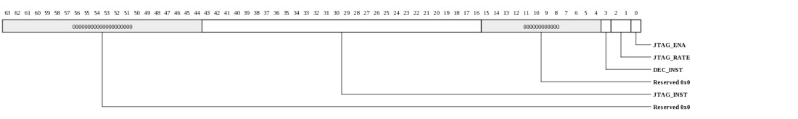
| Bits | Name | Type | Reset | Description
| 43:16 | JTAG_INST | RW | 0 | Selects the custom JTAG instruction number to be accessed. |
3 | DEC_INST | RW | 0 | NOTE: This field only exists in the following devices: Gx72. | Use decoded instruction. When 0, the low 9 bits of the JTAG_INST field are decoded. When 1, the entire JTAG_INST field is used as the JTAG_IR. 2:1 | JTAG_RATE | RW | 0 | Clock rate to use for rshim-based JTAG interface. |
0 | JTAG_ENA | RO | 0 | Reflects current state of the rjc/trst pins. When zero, the rshim will not be able to control the JTAG interface. | |
|---|
JTAG Data (RSH_JTAG_DATA: 0x0a10)
JTAG shift Data. SW provides up to 64 bits of data to be shifted into JTAG controller (bits are shifted out of LSBs). Hardware shifts data into the MSBs.| Bits | Name | Type | Reset | Description
| 63:0 | JTAG_DATA | RW | 0 | JTAG shift Data. SW provides up to 64 bits of data to be shifted into JTAG controller (bits are shifted out of LSBs). Hardware shifts data into the MSBs. | |
|---|
Diag Broadcast (RSH_DIAG_BROADCAST: 0x0a18)
Diag Broadcast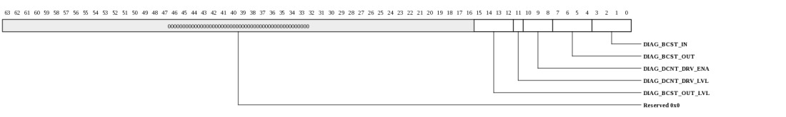
| Bits | Name | Type | Reset | Description
| 15:12 | DIAG_BCST_OUT_LVL | RW | 0 | NOTE: This field only exists in the following devices: Gx9 Gx16 Gx36 Gx72. | When written with a 1, the associated diag broadcast wire will be asserted. When written with a zero, the associated diag broadcast wire will be deasserted. These bits may also be set by hardware when DIAG_DCNT_DRV_LVL is 1 and the associated down counter interrupt occurs with the corresponding DIAG_DCNT_DRV_ENA bit set. 11 | DIAG_DCNT_DRV_LVL | RW | 0 | NOTE: This field only exists in the following devices: Gx9 Gx16 Gx36 Gx72. | When one of the DIAG_DCNT_DRV_ENA bits is set, this controls how the associated network is driven. 1 indicates level, 0 indicates pulse. When set to level, the DIAG_BCST_OUT_LVL bit will be asserted when the associated DIAG_DCNT_DRV_ENA event occurs. In DRV_LVL one mode, software can clear a bit that's been asserted by the down counter by writing a zero do the DIAG_BCST_OUT_LVL field. 10:8 | DIAG_DCNT_DRV_ENA | RW | 0 | NOTE: This field only exists in the following devices: Gx9 Gx16 Gx36 Gx72. | Each bit corresponds to one of the rshim's down-counters (0=DCNT0, 1=DCNT1, 2=DCNT2). When asserted, the down counter's interrupt pulse will be sent onto the associated diag broadcast network (BCST0 = DCNT0, BCST1 = DCNT1, BCST2 = DCNT2). 7:4 | DIAG_BCST_OUT | WO | 0 | NOTE: This field only exists in the following devices: Gx9 Gx16 Gx36 Gx72. | When written with a 1, the associated diag broadcast wire will be asserted for a single cycle going to the neighboring tile. 3:0 | DIAG_BCST_IN | W1TC | 0 | NOTE: This field only exists in the following devices: Gx9 Gx16 Gx36 Gx72. | Asserted by hardware when the associated broadcast wire is asserted (Bit[0] = BCST0, Bit[1] = BCST1, Bit[2] = BCST2, Bit[3] = BCST3). Cleared by software writing a 1 to this register. This field provides the same functionality as the associated interrupt status bit. |
|---|
TileMonitor Host to Tile Data (RSH_TM_HOST_TO_TILE_DATA: 0x0a20)
Provides read/write access to the HostToTile FIFO. When written, the TileMonitor HostToTile FIFO will be written with the associated data and the WPTR will be advanced. When read, the entry at the head of the FIFO will be returned and the RPTR will be advanced.When empty, reads will have no effect. Behavior on an empty read is device dependent. Tile software will receive all 1's on an empty read.
When full, writes will be ignored. Behavior on a full write is device dependent.
For Gx9/16/36/72 devices, this FIFO may only be used when PG.AUTO_SEND is zero (packet generator not in boot mode).
The FIFO may be drained by reading TM_HOST_TO_TILE_STS.COUNT entries.
| Bits | Name | Type | Reset | Description
| 63:0 | TM_HOST_TO_TILE_DATA | RW | 0 | Provides read/write access to the HostToTile FIFO. When written, the TileMonitor HostToTile FIFO will be written with the associated data and the WPTR will be advanced. When read, the entry at the head of the FIFO will be returned and the RPTR will be advanced. | When empty, reads will have no effect. Behavior on an empty read is device dependent. Tile software will receive all 1's on an empty read. When full, writes will be ignored. Behavior on a full write is device dependent. For Gx9/16/36/72 devices, this FIFO may only be used when PG.AUTO_SEND is zero (packet generator not in boot mode). The FIFO may be drained by reading TM_HOST_TO_TILE_STS.COUNT entries. |
|---|
TileMonitor Host to Tile Status (RSH_TM_HOST_TO_TILE_STS: 0x0a28)
Provides status of the HostToTile TileMonitor FIFO.
| Bits | Name | Type | Reset | Description
| 8:0 | COUNT | RO | 0 | Current entry count. | |
|---|
TileMonitor Host to Tile Control (RSH_TM_HOST_TO_TILE_CTL: 0x0a30)
Provides control over FIFO interrupts. Note that the HWM/LWM interrupts trigger continuously as long as the FIFO is is at or above/below the associated water mark. Thus these interrupts are typically used in INT_BIND.MODE=0 and should be cleared by SW after the condition has been handled (FIFO filled/drained as appropriate).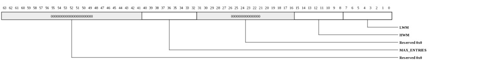
| Bits | Name | Type | Reset | Description
| 40:32 | MAX_ENTRIES | RO | 256 | Provides size of the HostToTile FIFO in terms of 8-byte entries. | 15:8 | HWM | RW | 128 | Level at which to trigger the high water mark interrupt. | 7:0 | LWM | RW | 128 | Level at which to trigger the low water mark interrupt. | |
|---|
TileMonitor tile to host Data (RSH_TM_TILE_TO_HOST_DATA: 0x0a40)
Provides read/write access to the TileToHost FIFO. When written, the TileMonitor TileToHost FIFO will be written with the associated data and the WPTR will be advanced. When read, the entry at the head of the FIFO will be returned and the RPTR will be advanced.When empty, reads will have no effect. Behavior on an empty read is device dependent. Tile software will receive all 1's on an empty read.
When full, writes will be ignored. Behavior on a full write is device dependent.
For Gx9/16/36/72 devices, this FIFO may only be used when PG.AUTO_SEND is zero (packet generator not in boot mode).
The FIFO may be drained by reading TM_TILE_TO_HOST_STS.COUNT entries.
| Bits | Name | Type | Reset | Description
| 63:0 | TM_TILE_TO_HOST_DATA | RW | 0 | Provides read/write access to the TileToHost FIFO. When written, the TileMonitor TileToHost FIFO will be written with the associated data and the WPTR will be advanced. When read, the entry at the head of the FIFO will be returned and the RPTR will be advanced. | When empty, reads will have no effect. Behavior on an empty read is device dependent. Tile software will receive all 1's on an empty read. When full, writes will be ignored. Behavior on a full write is device dependent. For Gx9/16/36/72 devices, this FIFO may only be used when PG.AUTO_SEND is zero (packet generator not in boot mode). The FIFO may be drained by reading TM_TILE_TO_HOST_STS.COUNT entries. |
|---|
TileMonitor tile to host status (RSH_TM_TILE_TO_HOST_STS: 0x0a48)
Provides status of the TileToHost TileMonitor FIFO.| Bits | Name | Type | Reset | Description
| 8:0 | COUNT | RO | 0 | Current entry count. | |
|---|
TileMonitor tile to host Control (RSH_TM_TILE_TO_HOST_CTL: 0x0a50)
Provides control over FIFO interrupts. Note that the HWM/LWM interrupts trigger continuously as long as the FIFO is is at or above/below the associated water mark. Thus these interrupts are typically used in INT_BIND.MODE=0 and should be cleared by SW after the condition has been handled (FIFO filled/drained as appropriate).
| Bits | Name | Type | Reset | Description
| 40:32 | MAX_ENTRIES | RO | 256 | Provides size of the TileToHost FIFO in terms of 8-byte entries. | 15:8 | HWM | RW | 128 | Level at which to trigger the high water mark interrupt. | 7:0 | LWM | RW | 128 | Level at which to trigger the low water mark interrupt. | |
|---|
Tile Disable (RSH_TILE_COL_DISABLE: 0x0b00-0x0b4f)
Disable individual Tiles. When set, the associated Tile is disabled. There is one register per column. Not all devices implement all possible rows and columns.| Bits | Name | Type | Reset | Description
| 9:0 | DISABLE | RW | HW | When 1, the associated Tile is disabled. | |
|---|
IO Disable-0 (RSH_GX36_IO_DISABLE0: 0x0b50)
NOTE: This register only exists in the following devices: Gx36.Device specific feature disable bits. These may be set (hardcoded) in hardware or set by software.
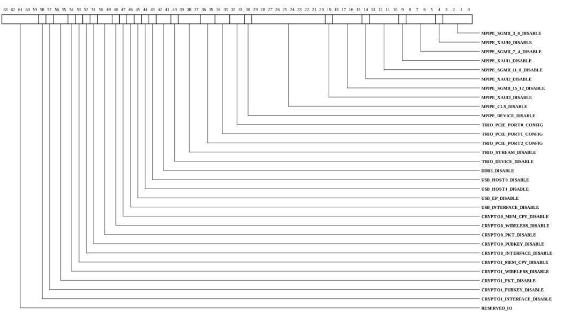
| Bits | Name | Type | Reset | Description
| 63:59 | RESERVED_IO | RW | HW | Reserved. | 58 | CRYPTO1_INTERFACE_DISABLE | RW | HW | When set, the entire crypto interface is disabled for all engines. | 57 | CRYPTO1_PUBKEY_DISABLE | RW | HW | When set, the public key engine is disabled. | 56:55 | CRYPTO1_PKT_DISABLE | RW | HW | When set, the associated set of packet crypto engines (DES/AES/SHA/MD5 etc.) is disabled. | 54 | CRYPTO1_WIRELESS_DISABLE | RW | HW | When set, the SNOW and KASUMI crypto engines are disabled. | 53 | CRYPTO1_MEM_CPY_DISABLE | RW | HW | When set, the MemCopy engine is disabled. | 52 | CRYPTO0_INTERFACE_DISABLE | RW | HW | When set, the entire crypto interface is disabled for all engines. | 51 | CRYPTO0_PUBKEY_DISABLE | RW | HW | When set, the public key engine is disabled. | 50:49 | CRYPTO0_PKT_DISABLE | RW | HW | When set, the associated set of packet crypto engines (DES/AES/SHA/MD5 etc.) is disabled. | 48 | CRYPTO0_WIRELESS_DISABLE | RW | HW | When set, the SNOW and KASUMI crypto engines are disabled. | 47 | CRYPTO0_MEM_CPY_DISABLE | RW | HW | When set, the MemCopy engine is disabled. | 46 | USB_INTERFACE_DISABLE | RW | HW | When set, the entire USB interface is disabled (all ports disabled). | 45 | USB_EP_DISABLE | RW | HW | When set, the USB endpoint is disabled. | 44 | USB_HOST1_DISABLE | RW | HW | When set, USB Host1 is disabled. | 43 | USB_HOST0_DISABLE | RW | HW | When set, USB Host0 is disabled. | 42:41 | DDR3_DISABLE | RW | HW | When set, the associated DDR3 interface is disabled. | 40 | TRIO_DEVICE_DISABLE | RW | HW | When set, the entire TRIO interface is disabled. | 39:37 | TRIO_STREAM_DISABLE | RW | HW | Each bit corresponds to a StreamIO port. When set, the associated port may not be used for StreamIO. | 36:35 | TRIO_PCIE_PORT2_CONFIG | RW | HW | Configures width/availability of the PCIe port |
34:33 | TRIO_PCIE_PORT1_CONFIG | RW | HW | Configures width/availability of the PCIe port |
32:31 | TRIO_PCIE_PORT0_CONFIG | RW | HW | Configures width/availability of the PCIe port |
30 | MPIPE_DEVICE_DISABLE | RW | HW | When set, the entire MPIPE is disabled. | 29:20 | MPIPE_CLS_DISABLE | RW | HW | Each bit corresponds to a classification processor. When set, the processor is disabled. | 19 | MPIPE_XAUI3_DISABLE | RW | HW | When set, the associated XAUI port is disabled. | 18:15 | MPIPE_SGMII_15_12_DISABLE | RW | HW | Each bit corresponds to an SGMII port. When set, the port is disabled. | 14 | MPIPE_XAUI2_DISABLE | RW | HW | When set, the associated XAUI port is disabled. | 13:10 | MPIPE_SGMII_11_8_DISABLE | RW | HW | Each bit corresponds to an SGMII port. When set, the port is disabled. | 9 | MPIPE_XAUI1_DISABLE | RW | HW | When set, the associated XAUI port is disabled. | 8:5 | MPIPE_SGMII_7_4_DISABLE | RW | HW | Each bit corresponds to an SGMII port. When set, the port is disabled. | 4 | MPIPE_XAUI0_DISABLE | RW | HW | When set, the associated XAUI port is disabled. | 3:0 | MPIPE_SGMII_3_0_DISABLE | RW | HW | Each bit corresponds to an SGMII port. When set, the port is disabled. | |
|---|
IO Disable-0 (RSH_GX9_IO_DISABLE0: 0x0b50)
NOTE: This register only exists in the following devices: Gx9.Device specific feature disable bits. These may be set (hardcoded) in hardware or set by software.

| Bits | Name | Type | Reset | Description
| 63:59 | RESERVED_IO | RW | HW | Reserved. | 58 | CRYPTO1_INTERFACE_DISABLE | RW | HW | When set, the entire crypto interface is disabled for all engines. | 57 | CRYPTO1_PUBKEY_DISABLE | RW | HW | When set, the public key engine is disabled. | 56:55 | CRYPTO1_PKT_DISABLE | RW | HW | When set, the associated set of packet crypto engines (DES/AES/SHA/MD5 etc.) is disabled. | 54 | CRYPTO1_WIRELESS_DISABLE | RW | HW | When set, the SNOW and KASUMI crypto engines are disabled. | 53 | CRYPTO1_MEM_CPY_DISABLE | RW | HW | When set, the MemCopy engine is disabled. | 52 | CRYPTO0_INTERFACE_DISABLE | RW | HW | When set, the entire crypto interface is disabled for all engines. | 51 | CRYPTO0_PUBKEY_DISABLE | RW | HW | When set, the public key engine is disabled. | 50:49 | CRYPTO0_PKT_DISABLE | RW | HW | When set, the associated set of packet crypto engines (DES/AES/SHA/MD5 etc.) is disabled. | 48 | CRYPTO0_WIRELESS_DISABLE | RW | HW | When set, the SNOW and KASUMI crypto engines are disabled. | 47 | CRYPTO0_MEM_CPY_DISABLE | RW | HW | When set, the MemCopy engine is disabled. | 46 | USB_INTERFACE_DISABLE | RW | HW | When set, the entire USB interface is disabled (all ports disabled). | 45 | USB_EP_DISABLE | RW | HW | When set, the USB endpoint is disabled. | 44 | USB_HOST1_DISABLE | RW | HW | When set, USB Host1 is disabled. | 43 | USB_HOST0_DISABLE | RW | HW | When set, USB Host0 is disabled. | 42:41 | DDR3_DISABLE | RW | HW | When set, the associated DDR3 interface is disabled. | 40 | TRIO_DEVICE_DISABLE | RW | HW | When set, the entire TRIO interface is disabled. | 39:37 | TRIO_STREAM_DISABLE | RW | HW | Each bit corresponds to a StreamIO port. When set, the associated port may not be used for StreamIO. | 36:35 | TRIO_PCIE_PORT2_CONFIG | RW | HW | Configures width/availability of the PCIe port |
34:33 | TRIO_PCIE_PORT1_CONFIG | RW | HW | Configures width/availability of the PCIe port |
32:31 | TRIO_PCIE_PORT0_CONFIG | RW | HW | Configures width/availability of the PCIe port |
30 | MPIPE_DEVICE_DISABLE | RW | HW | When set, the entire MPIPE is disabled. | 29:20 | MPIPE_CLS_DISABLE | RW | HW | Each bit corresponds to a classification processor. When set, the processor is disabled. | 19 | MPIPE_XAUI3_DISABLE | RW | HW | When set, the associated XAUI port is disabled. | 18:15 | MPIPE_SGMII_15_12_DISABLE | RW | HW | Each bit corresponds to an SGMII port. When set, the port is disabled. | 14 | MPIPE_XAUI2_DISABLE | RW | HW | When set, the associated XAUI port is disabled. | 13:10 | MPIPE_SGMII_11_8_DISABLE | RW | HW | Each bit corresponds to an SGMII port. When set, the port is disabled. | 9 | MPIPE_XAUI1_DISABLE | RW | HW | When set, the associated XAUI port is disabled. | 8:5 | MPIPE_SGMII_7_4_DISABLE | RW | HW | Each bit corresponds to an SGMII port. When set, the port is disabled. | 4 | MPIPE_XAUI0_DISABLE | RW | HW | When set, the associated XAUI port is disabled. | 3:0 | MPIPE_SGMII_3_0_DISABLE | RW | HW | Each bit corresponds to an SGMII port. When set, the port is disabled. | |
|---|
IO Disable-0 (RSH_GX72_IO_DISABLE0: 0x0b50)
NOTE: This register only exists in the following devices: Gx72.Device specific feature disable bits. These may be set (hardcoded) in hardware or set by software.
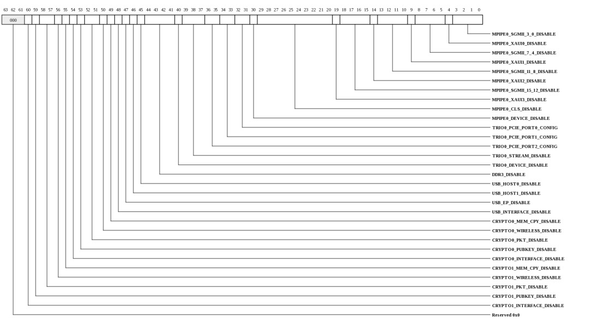
| Bits | Name | Type | Reset | Description
| 60 | CRYPTO1_INTERFACE_DISABLE | RW | HW | When set, the entire crypto interface is disabled for all engines. | 59 | CRYPTO1_PUBKEY_DISABLE | RW | HW | When set, the public key engine is disabled. | 58:57 | CRYPTO1_PKT_DISABLE | RW | HW | When set, the associated set of packet crypto engines (DES/AES/SHA/MD5 etc.) is disabled. | 56 | CRYPTO1_WIRELESS_DISABLE | RW | HW | When set, the SNOW and KASUMI crypto engines are disabled. | 55 | CRYPTO1_MEM_CPY_DISABLE | RW | HW | When set, the MemCopy engine is disabled. | 54 | CRYPTO0_INTERFACE_DISABLE | RW | HW | When set, the entire crypto interface is disabled for all engines. | 53 | CRYPTO0_PUBKEY_DISABLE | RW | HW | When set, the public key engine is disabled. | 52:51 | CRYPTO0_PKT_DISABLE | RW | HW | When set, the associated set of packet crypto engines (DES/AES/SHA/MD5 etc.) is disabled. | 50 | CRYPTO0_WIRELESS_DISABLE | RW | HW | When set, the SNOW and KASUMI crypto engines are disabled. | 49 | CRYPTO0_MEM_CPY_DISABLE | RW | HW | When set, the MemCopy engine is disabled. | 48 | USB_INTERFACE_DISABLE | RW | HW | When set, the entire USB interface is disabled (all ports disabled). | 47 | USB_EP_DISABLE | RW | HW | When set, the USB endpoint is disabled. | 46 | USB_HOST1_DISABLE | RW | HW | When set, USB Host1 is disabled. | 45 | USB_HOST0_DISABLE | RW | HW | When set, USB Host0 is disabled. | 44:41 | DDR3_DISABLE | RW | HW | When set, the associated DDR3 interface is disabled. | 40 | TRIO0_DEVICE_DISABLE | RW | HW | When set, the entire TRIO interface is disabled. | 39:37 | TRIO0_STREAM_DISABLE | RW | HW | Each bit corresponds to a StreamIO port. When set, the associated port may not be used for StreamIO. | 36:35 | TRIO0_PCIE_PORT2_CONFIG | RW | HW | Configures width/availability of the PCIe port |
34:33 | TRIO0_PCIE_PORT1_CONFIG | RW | HW | Configures width/availability of the PCIe port |
32:31 | TRIO0_PCIE_PORT0_CONFIG | RW | HW | Configures width/availability of the PCIe port |
30 | MPIPE0_DEVICE_DISABLE | RW | HW | When set, the entire MPIPE is disabled. | 29:20 | MPIPE0_CLS_DISABLE | RW | HW | Each bit corresponds to a classification processor. When set, the processor is disabled. | 19 | MPIPE0_XAUI3_DISABLE | RW | HW | When set, the associated XAUI port is disabled. | 18:15 | MPIPE0_SGMII_15_12_DISABLE | RW | HW | Each bit corresponds to an SGMII port. When set, the port is disabled. | 14 | MPIPE0_XAUI2_DISABLE | RW | HW | When set, the associated XAUI port is disabled. | 13:10 | MPIPE0_SGMII_11_8_DISABLE | RW | HW | Each bit corresponds to an SGMII port. When set, the port is disabled. | 9 | MPIPE0_XAUI1_DISABLE | RW | HW | When set, the associated XAUI port is disabled. | 8:5 | MPIPE0_SGMII_7_4_DISABLE | RW | HW | Each bit corresponds to an SGMII port. When set, the port is disabled. | 4 | MPIPE0_XAUI0_DISABLE | RW | HW | When set, the associated XAUI port is disabled. | 3:0 | MPIPE0_SGMII_3_0_DISABLE | RW | HW | Each bit corresponds to an SGMII port. When set, the port is disabled. | |
|---|
IO Disable-1 (RSH_GX36_IO_DISABLE1: 0x0b58)
NOTE: This register only exists in the following devices: Gx36.Device specific feature disable bits. These may be set (hardcoded) in hardware or set by software.

| Bits | Name | Type | Reset | Description
| 35:8 | RESERVED_IO | RW | HW | Reserved. | 7 | COMP_INTERFACE1_DISABLE | RW | HW | When set, the entire compression/decompression/MemCPY interface is disabled. | 6 | MEM_CPY1_DISABLE | RW | HW | When set, the associated MEM_CPY (DMA) interface is disabled. | 5 | DECOMP1_DISABLE | RW | HW | When set, the associated decompression engine is disabled. | 4 | COMP1_DISABLE | RW | HW | When set, the associated compression engine is disabled. | 3 | COMP_INTERFACE0_DISABLE | RW | HW | When set, the entire compression/decompression/MemCPY interface is disabled. | 2 | MEM_CPY0_DISABLE | RW | HW | When set, the associated MEM_CPY (DMA) interface is disabled. | 1 | DECOMP0_DISABLE | RW | HW | When set, the associated decompression engine is disabled. | 0 | COMP0_DISABLE | RW | HW | When set, the associated compression engine is disabled. | |
|---|
IO Disable-1 (RSH_GX9_IO_DISABLE1: 0x0b58)
NOTE: This register only exists in the following devices: Gx9.Device specific feature disable bits. These may be set (hardcoded) in hardware or set by software.
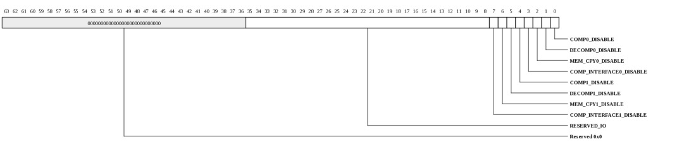
| Bits | Name | Type | Reset | Description
| 35:8 | RESERVED_IO | RW | HW | Reserved. | 7 | COMP_INTERFACE1_DISABLE | RW | HW | When set, the entire compression/decompression/MemCPY interface is disabled. | 6 | MEM_CPY1_DISABLE | RW | HW | When set, the associated MEM_CPY (DMA) interface is disabled. | 5 | DECOMP1_DISABLE | RW | HW | When set, the associated decompression engine is disabled. | 4 | COMP1_DISABLE | RW | HW | When set, the associated compression engine is disabled. | 3 | COMP_INTERFACE0_DISABLE | RW | HW | When set, the entire compression/decompression/MemCPY interface is disabled. | 2 | MEM_CPY0_DISABLE | RW | HW | When set, the associated MEM_CPY (DMA) interface is disabled. | 1 | DECOMP0_DISABLE | RW | HW | When set, the associated decompression engine is disabled. | 0 | COMP0_DISABLE | RW | HW | When set, the associated compression engine is disabled. | |
|---|
IO Disable-1 (RSH_GX72_IO_DISABLE1: 0x0b58)
NOTE: This register only exists in the following devices: Gx72.Device specific feature disable bits. These may be set (hardcoded) in hardware or set by software.
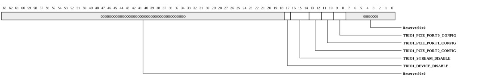
| Bits | Name | Type | Reset | Description
| 17 | TRIO1_DEVICE_DISABLE | RW | HW | When set, the entire TRIO interface is disabled. | 16:14 | TRIO1_STREAM_DISABLE | RW | HW | Each bit corresponds to a StreamIO port. When set, the associated port may not be used for StreamIO. | 13:12 | TRIO1_PCIE_PORT2_CONFIG | RW | HW | Configures width/availability of the PCIe port |
11:10 | TRIO1_PCIE_PORT1_CONFIG | RW | HW | Configures width/availability of the PCIe port |
9:8 | TRIO1_PCIE_PORT0_CONFIG | RW | HW | Configures width/availability of the PCIe port |
|
|---|
IO Disable-2 (RSH_GX72_IO_DISABLE2: 0x0b60)
NOTE: This register only exists in the following devices: Gx72.Device specific feature disable bits. These may be set (hardcoded) in hardware or set by software.
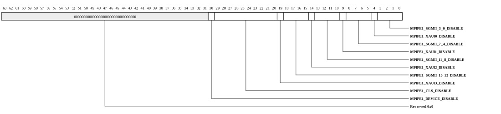
| Bits | Name | Type | Reset | Description
| 30 | MPIPE1_DEVICE_DISABLE | RW | HW | When set, the entire MPIPE is disabled. | 29:20 | MPIPE1_CLS_DISABLE | RW | HW | Each bit corresponds to a classification processor. When set, the processor is disabled. | 19 | MPIPE1_XAUI3_DISABLE | RW | HW | When set, the associated XAUI port is disabled. | 18:15 | MPIPE1_SGMII_15_12_DISABLE | RW | HW | Each bit corresponds to an SGMII port. When set, the port is disabled. | 14 | MPIPE1_XAUI2_DISABLE | RW | HW | When set, the associated XAUI port is disabled. | 13:10 | MPIPE1_SGMII_11_8_DISABLE | RW | HW | Each bit corresponds to an SGMII port. When set, the port is disabled. | 9 | MPIPE1_XAUI1_DISABLE | RW | HW | When set, the associated XAUI port is disabled. | 8:5 | MPIPE1_SGMII_7_4_DISABLE | RW | HW | Each bit corresponds to an SGMII port. When set, the port is disabled. | 4 | MPIPE1_XAUI0_DISABLE | RW | HW | When set, the associated XAUI port is disabled. | 3:0 | MPIPE1_SGMII_3_0_DISABLE | RW | HW | Each bit corresponds to an SGMII port. When set, the port is disabled. | |
|---|
GPIO Mode Control (RSH_GX72_GPIO_MODE: 0x0b70)
NOTE: This register only exists in the following devices: Gx72.Device specific mode control for GPIO pins. The bit location in this register corresponds to the GPIO pin being used for the associated function.
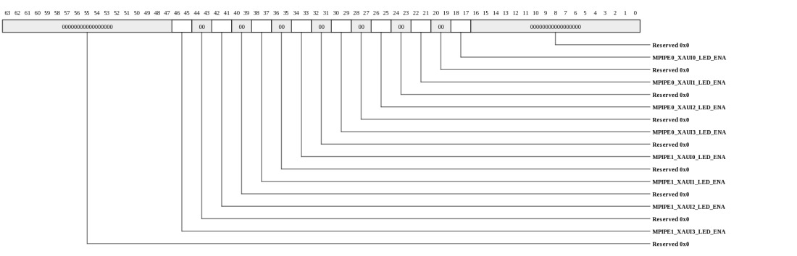
| Bits | Name | Type | Reset | Description
| 46:45 | MPIPE1_XAUI3_LED_ENA | RW | 0 | Enable LED outputs on the associated GPIO pins. The MSB is LED[1] (typically "link") and the LSB is LED[0] (typically "activity"). | 42:41 | MPIPE1_XAUI2_LED_ENA | RW | 0 | Enable LED outputs on the associated GPIO pins. The MSB is LED[1] (typically "link") and the LSB is LED[0] (typically "activity"). | 38:37 | MPIPE1_XAUI1_LED_ENA | RW | 0 | Enable LED outputs on the associated GPIO pins. The MSB is LED[1] (typically "link") and the LSB is LED[0] (typically "activity"). | 34:33 | MPIPE1_XAUI0_LED_ENA | RW | 0 | Enable LED outputs on the associated GPIO pins. The MSB is LED[1] (typically "link") and the LSB is LED[0] (typically "activity"). | 30:29 | MPIPE0_XAUI3_LED_ENA | RW | 0 | Enable LED outputs on the associated GPIO pins. The MSB is LED[1] (typically "link") and the LSB is LED[0] (typically "activity"). | 26:25 | MPIPE0_XAUI2_LED_ENA | RW | 0 | Enable LED outputs on the associated GPIO pins. The MSB is LED[1] (typically "link") and the LSB is LED[0] (typically "activity"). | 22:21 | MPIPE0_XAUI1_LED_ENA | RW | 0 | Enable LED outputs on the associated GPIO pins. The MSB is LED[1] (typically "link") and the LSB is LED[0] (typically "activity"). | 18:17 | MPIPE0_XAUI0_LED_ENA | RW | 0 | Enable LED outputs on the associated GPIO pins. The MSB is LED[1] (typically "link") and the LSB is LED[0] (typically "activity"). | |
|---|
Copyright © 2014 Tilera® Corporation. All rights reserved. Printed in the United States of America.
No part of this book may be reproduced, stored in a retrieval system, or transmitted in any form or by any means, electronic, mechanical, photocopying, recording, or otherwise, except as may be expressly permitted by the applicable copyright statutes or in writing by the Publisher.
The following are registered trademarks of Tilera Corporation: Tilera and the Tilera logo. The following are trademarks of Tilera Corporation: Embedding Multicore, The Multicore Company, Tile Processor, TILE Architecture, TILE64, TILEPro, TILEPro36, TILEPro64, TILExpress, TILExpress-64, TILExpressPro-64, TILExpress-20G, TILExpressPro-20G, TILExpressPro-22G, iMesh, TileDirect, TILEmpower, TILEmpower-Gx, TILEncore, TILEncorePro, TILEncore-Gx, TILE-Gx, TILE-Gx16, TILE-Gx36, TILE-Gx64, TILE-Gx100, TILE-Gx3000, TILE-Gx5000, TILE-Gx8000, DDC (Dynamic Distributed Cache), Multicore Development Environment, Gentle Slope Programming, iLib, TMC (Tilera Multicore Components), hardwall, Zero Overhead Linux (ZOL), MiCA (Multicore iMesh Coprocessing Accelerator), and mPIPE (multicore Programmable Intelligent Packet Engine). All other trademarks and/or registered trademarks are the property of their respective owners.
Third-party software: The Tilera IDE makes use of the BeanShell scripting library. Source code for the BeanShell library can be found at the BeanShell website (http://www.beanshell.org/developer.html).
The following is a trademark of Marvell Semiconductor, Inc.: Distributed Switching Architecture (DSA).
This document contains advance information on Tilera products that are in development, sampling or initial production phases. This information and specifications contained herein are subject to change without notice at the discretion of Tilera Corporation.
No license, express or implied by estoppels or otherwise, to any intellectual property is granted by this document. Tilera disclaims any express or implied warranty relating to the sale and/or use of Tilera products, including liability or warranties relating to fitness for a particular purpose, merchantability or infringement of any patent, copyright or other intellectual property right.
Products described in this document are NOT intended for use in medical, life support, or other hazardous uses where malfunction could result in death or bodily injury.
THE INFORMATION CONTAINED IN THIS DOCUMENT IS PROVIDED ON AN "AS IS" BASIS. Tilera assumes no liability for damages arising directly or indirectly from any use of the information contained in this document.